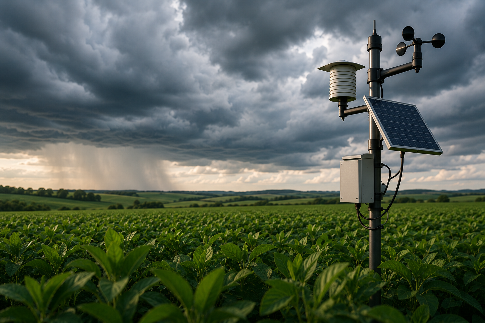
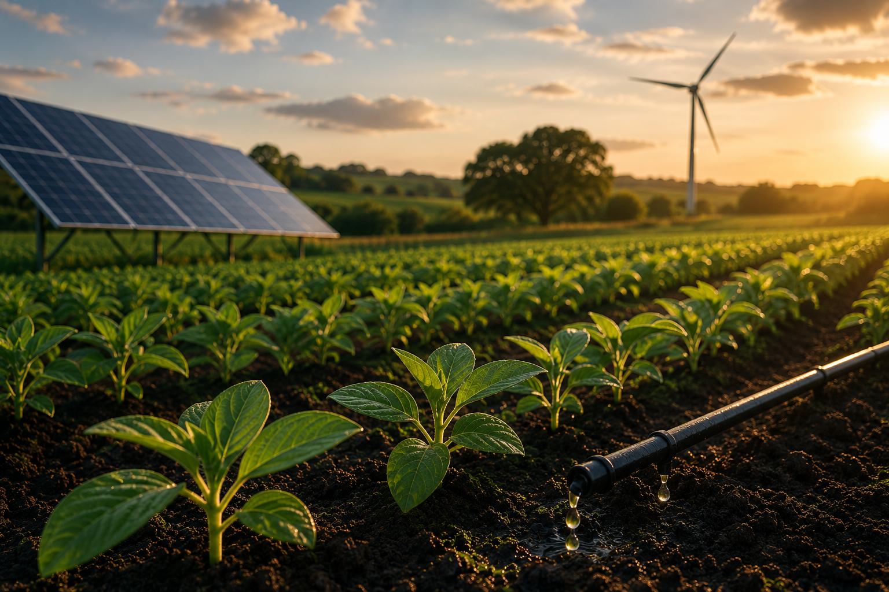

Plantio Inteligente
Auxilia o produtor na escolha do melhor momento e estratégia de plantio, utilizando dados para melhorar a produtividade.
Conheça as funcionalidades que oferecemos para atender às suas necessidades.
Auxilia o produtor na escolha do melhor momento e estratégia de plantio, utilizando dados para melhorar a produtividade.

Acompanha condições climáticas em tempo real, ajudando na prevenção de riscos e na tomada de decisões no campo.
Permite organizar e acompanhar etapas da produção agrícola de forma simples, facilitando o controle da propriedade.

Sugere práticas mais eficientes e sustentáveis, contribuindo para melhor uso de recursos e redução de desperdícios.